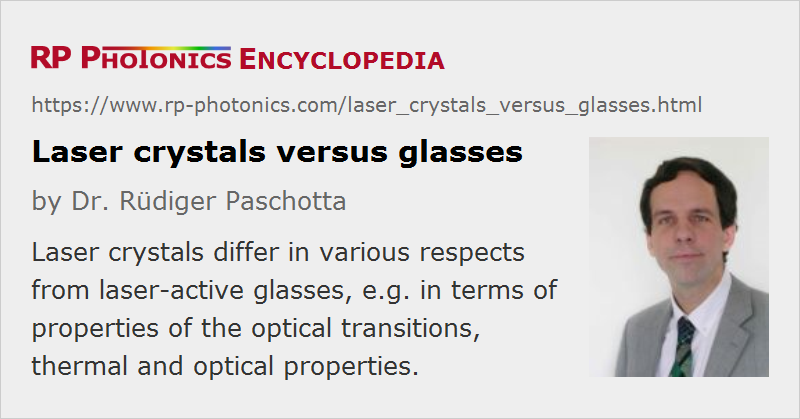

Laser Crystals Versus Glasses
More general term: gain media
German: Laserkristalle und Lasergläser
Categories: optical materials, lasers
How to cite the article; suggest additional literature
Author: Dr. Rüdiger Paschotta
Gain media of solid-state lasers are typically optically pumped and based on single crystals or glasses, or sometimes ceramics. These optical materials can be doped with laser-active trivalent rare earth ions (Nd3+, Yb3+, Er3+, Tm3+, Pr3+, Ho3+) or with transition metal ions (Ti3+, Cr2+, Cr3+, Cr4+). There are also various direct-band gap semiconductor gain media, which are definitely solid-state media but are not considered in this article.
The following sections treat the main differences between ion-doped crystals and glasses.
Optical Transitions
Rare-earth-doped laser crystals often exhibit sharply defined laser and pump transitions, which typically have a bandwidth of a few nanometers or less. In contrast, glasses typically have much broader transitions with bandwidths of the order of tens of nanometers. This difference arises from the fact that in many laser crystals the laser-active ions occupy only a specific site of the crystal lattice, so that all laser-active ions see the same surroundings, whereas glasses offer many different environments to these ions, so that there is strong inhomogeneous broadening.
However, crystals doped with transition metal ions also exhibit fairly broad transition bandwidths because of the strong interaction of these ions with neighboring constituents. (In rare-earth-doped crystals, the electrons which are responsible for the laser and pump transitions are relatively well shielded against their surroundings by completely filled electron shells below which they can hide.) Another possibility is to use crystals which offer a variety of different lattice sites to the dopant ions; for example, there are highly disordered ytterbium-doped apatite crystals.
In any case, broad linewidths of laser transitions are good for wavelength tuning and the generation of ultrashort pulses, whereas a broad bandwidth of pump transitions helps to reduce the wavelength tolerance for the pump source.
As the oscillator strengths of laser transitions are often similar for crystals and glasses with the same dopant ions, the broader transition bandwidths of glasses imply lower effective transition cross sections. (The transitions are “smeared out”.) This leads to a higher threshold pump power, a stronger tendency for spiking behavior, and (for passively mode-locked lasers) a higher tendency for Q-switching instabilities.
Thermal Properties
The strong microscopic disorder in glass materials leads to a reduced thermal conductivity. This is detrimental for high-power lasers, mainly because it can lead to thermal fracture and to strong thermal lensing. The latter makes it more difficult to achieve a high beam quality.
Production
Laser crystals are usually single crystals, because boundaries between crystallites of polycrystalline media usually lead to strong scattering losses. (There are, however, ceramic gain media which have sufficiently small crystallites to avoid significant losses.) As single crystals are more challenging to produce (e.g. via Czochralski growth from a melt) and process, they are usually significantly more expensive than glasses, and the size with which they can be produced is limited. Laser glasses can be produced in very large dimensions with good optical quality.
Birefringence and Anisotropy
Some laser crystals exhibit strong birefringence, which can be beneficial e.g. for avoiding depolarization loss. Glasses exhibit only thermally induced birefringence, which is usually unwanted. (See also: polarization of light.) The anisotropy of crystals can also include direction-dependent and polarization-dependent optical gain and losses.
Use as Optical Fibers
Some glasses can be drawn into optical fibers, and this opens a lot of possibilities. There are also crystalline fibers, which are usually just thin and long rods (and fairly rigid), that have interesting properties but can not offer the versatility of glass fibers.
Suppliers
The RP Photonics Buyer's Guide contains 7 suppliers for laser glasses.
Questions and Comments from Users
Here you can submit questions and comments. As far as they get accepted by the author, they will appear above this paragraph together with the author’s answer. The author will decide on acceptance based on certain criteria. Essentially, the issue must be of sufficiently broad interest.
Please do not enter personal data here; we would otherwise delete it soon. (See also our privacy declaration.) If you wish to receive personal feedback or consultancy from the author, please contact him e.g. via e-mail.
By submitting the information, you give your consent to the potential publication of your inputs on our website according to our rules. (If you later retract your consent, we will delete those inputs.) As your inputs are first reviewed by the author, they may be published with some delay.
See also: laser crystals, gain media, rare-earth-doped gain media, transition-metal-doped gain media, neodymium-doped gain media, ytterbium-doped gain media, chromium-doped gain media, ceramic gain media
and other articles in the categories optical materials, lasers
|  |
If you like this page, please share the link with your friends and colleagues, e.g. via social media:
These sharing buttons are implemented in a privacy-friendly way!